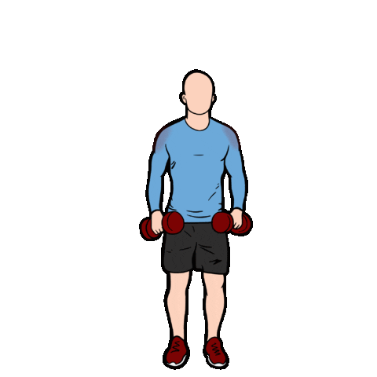

1.Shoulder Press
First, select your dumbbells. Don’t go overboard on the weight here, because this is an exercise that suddenly feels very tough halfway through a set. You almost want to feel like you’ve picked too light a weight for the first couple of reps. Opting for too heavy a weight can also mean you risk injury to your shoulders if your form gets sloppy as a result of the load.Hold the dumbbells by your shoulders with your palms facing forwards and your elbows out to the sides and bent at a 90° angle. Without leaning back, extend through your elbows to press the weights above your head. Then slowly return to the starting position.
2.Side Raise
Stand or sit with a dumbbell in each hand at your sides. Keep your back straight, brace your core, and then slowly lift the weights out to the side until your arms are parallel with the floor, with the elbow slightly bent. Then lower them back down, again in measured fashion – you’ll find it all the harder if you avoid speeding up. A lot of people will cheat by “shrugging” the weights up using their traps. Resist the urge to do that by not raising your shoulder blades during the rep – instead focus on the delts.
3.Front Raise
Begin by holding both dumbbells of equal weight in front of your thighs with your palms facing your body (a pronated grip). Keeping your back straight and feet shoulder-width apart, lift the dumbbells in front of you in a controlled manner until your hands are in line with your shoulders. Pause, then slowly lower back to the starting position.